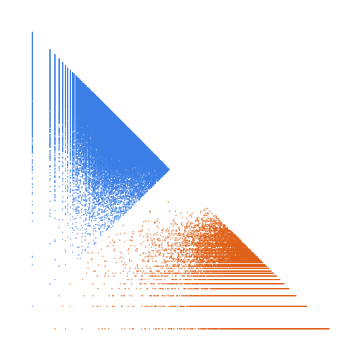

Primes p such that 2*p-1 is a semiprime

Open in the 3-D viewerA328058 on the OEIS
| Terms | 100,000 (n = 1 … 100,000) |
|---|---|
| Decomposable (a > 2d) | 99,998 |
| Level class, k > L | 35,384 · 35.38 % |
| Weight class, k ≤ L | 64,614 · 64.62 % |
| Ties, k = L | 27 |
| On the level line L = 1 | 10,378 |
| Forced level, l ≤ d² | 49 |
| Range of a(n) | 5 … 5,796,521 |
| Range of the jump d | 2 … 588 |
| Largest weight k, level L | 5,796,431, 1,929,639 |
233 different gaps occur, from 2 to 588; the level share is 35.38 %.
The decomposition
Every term of a strictly increasing sequence is written a(n) = k(n)·L(n) + d(n): the jump d = a(n+1) − a(n), the weight k the least divisor of a − d greater than d, the level L = (a − d)/k. A term decomposes when a > 2d; it is in the level class when k > L and in the weight class when k ≤ L. See decompwlj.com and arXiv:0711.0865.